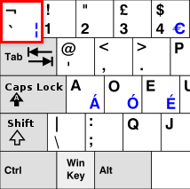

탬플릿 리터럴(template literals)에 대해 알아보자.
백틱(backtick) 이란?
키보드 숫자 1키 왼쪽편에 있는 ` 이 특수 문자의 이름이 백틱이다.

문자열 합치기
es6 이전에는 문자열을 합치기 위해서는 + 연산자를 사용하였다.
1 2 3 4 5 6 7 | let user1 = '홍길동' let age1 = '20' let text = '안녕하세요. 저는 ' + user1 + '입니다.\n나이는 ' + age1 + '살 입니다.'; console.log(text); // 안녕하세요. 저는 홍길동입니다. // 나이는 20살 입니다. | cs |
템플릿 리터럴 사용하기
템플릿 리터럴은 백틱을 문자열 시작과 끝에 작성해주고,
내부의 변수가 처리 되는 부분에 $(달러 기호)와
{}(중괄호)를 사용하여, 변수명을 넣어준다.
1 2 3 4 5 6 7 8 9 10 | let user1 = '홍길동' let age1 = '20' let text = `안녕하세요. 저는 ${user1} 입니다.\n 나이는 ${age1}살 입니다.`; console.log(text); // 안녕하세요. 저는 홍길동입니다. // 나이는 20살 입니다. // 기존의 문자열 합치는 방식에 비해 // 직관적이고, 작성이 쉽다. | cs |
멀티라인 문자열 (multi-line string)
백틱을 사용하여 멀티 라인도 쉽게 처리가 가능하다.
기존에는 이스케이프 문자열 줄바꿈 방식(\n)을 활용하여 처리하였다.
백틱을 사용하면 추가 처리 없이 다음줄에 작성하면 된다.
주의 할 점은
좌측 들여쓰기 여백도 포함된다는 점이다.
1 2 3 4 5 6 | //es5 이전 let es5 = '안녕하세요. 저는 홍길동입니다.\n 나이는 20살 입니다.' //es6 let es6 = `안녕하세요 저는 홍길동입니다. 나이는 20살 입니다.` | cs |